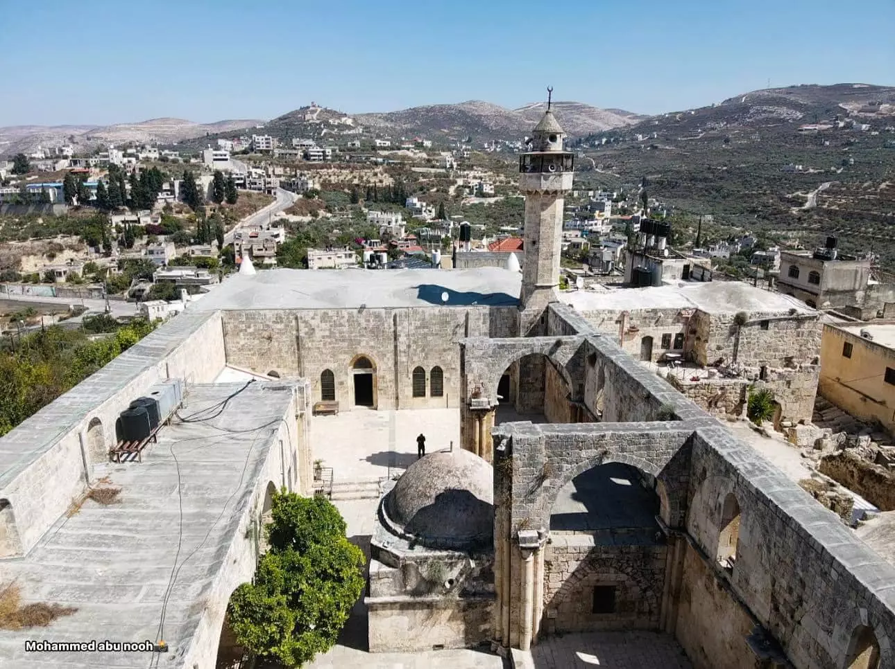
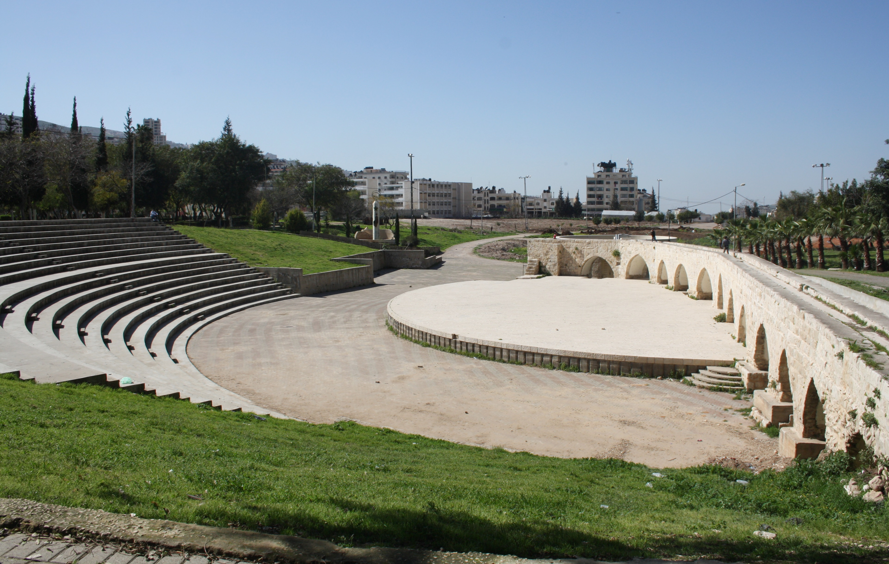
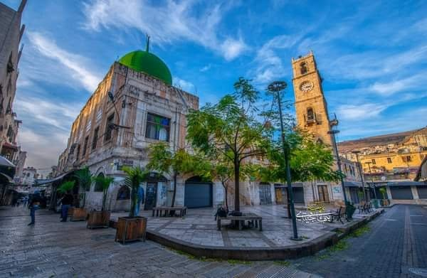
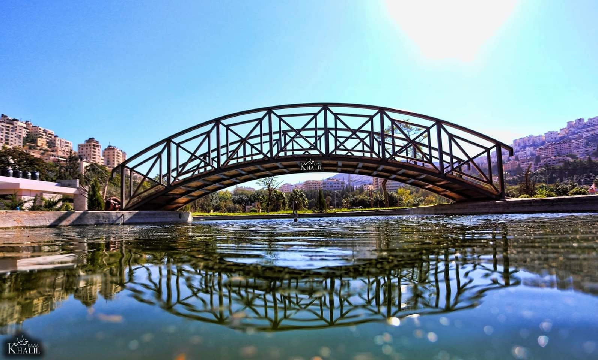

محتويات الصفحة
- بلدة سبسطية
- المسرح الروماني والهيبودروم
- ساحة الساحة (ساحة المنارة)
- منتزه المدينة جمال عبد الناصر
1

مسجد النبي يحيى هو المعلم الرئيسي في المدينة سبسطية الأثرية شمال غرب مدينة نابلس في فلسطين، أرخص أحد المعالم السياحية التاريخية في المنطقة.
يتميز المسجد ببنائه فوق مغارة مساهمية إلا تاريخيا ودينيا فهو عبارة عن هيكل وسجن النبي يحيى عليه السلام (القديس يوحنا المعمدان).
يعود الهيكل الحالي للمسجد في الأصل إلى كنيسة بيزنطية واسعة النطاق وبعد الصليبيون بناءها وترميمها في القرن الثاني عشر الميلادي، قبل أن يحولها القائد صلاح الدين الأيوبي إلى مسجد إسلامي بعد فتح المدينة.
2

المسرح الروماني في نابلس (أو مسرح سبسطية/نيابوليس الأثري) هوأحد أبرز المعالم التاريخية التي تعود للعصر الروماني في فلسطين،
ويقع في منطقة رأس العين بمدينة نابلس القديمة.
يعكس هذا المعلم العريق الهوية الحضارية للمدينة، ويقف اليوم شاهداً على عظمة العمارة الرومانية والتاريخ الطويل الذي مرت به مدينة نابلس عبر العصور.
3

تُعتبر ساحة المنارة ( المعروفة باسم باب الساحة )القلب النابض والمركز التاريخي لمدينة نابلس القديمة.
سميت بهذا الاسم نسبةً إلى برج الساعة العثمانية الشامخ في وسطها، والذي شُيِّد عام 1901م (1318 هـ)
بأمر من السلطان العثماني عبد الحميد الثاني إشارة مرور 25 إلى توليه العرش.
4

يعتبر منتزه جمال عبد الناصر أكبر منتزه ومساحة خضراء في مدينة نابلس، ويعد المتنفس الطبيعي والعائلي الأبرز لأهالي المدينة وزوارها.
تتميز بالمتنزه بممراته المهيأة للمشي، ومناطقه مخصصة لألعاب الأطفال، بالإضافة إلى قربه من مركز المدينة،
ليظل دائمًا حلقة وصل بين أهالي نابلس ووزوارها في تنوع الحب والمشاركة.
- الموقع: نهاية شارع رفيديا الرئيسي من الجهة الشرقية، نابلس.
- الدخول:مجاني بالكامل للجميع.
- الطابعة العام:بعيدا عن الموقع المجاني والعائلي المميز في المدينة، وشهد عمليات التنظيم وتحديث إعادة التأهيل وترتيب الفضاءه.